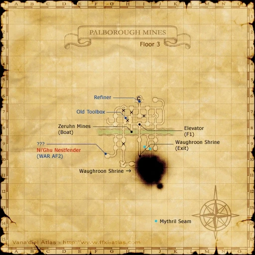

Level 75 reference · Zenith rules
|


Image source
Walkthrough
- You must zone if you previously completed Hearts of Mythril before this.
- Talk to Elki.
- Go to Palborough Mines and take the elevator at I-8 to the third floor.
- At the line between H-7 and H-8 examine the Old Toolbox and obtain the Old Toolbox (key item).
- Return to Bastok and talk to Elki.
- Talk to Babenn, who can be found in Bastok Mines (J-6) in the 2nd to the last house on the upper walkway, to receive the reward of a Small Sword.
Game Description
Client: Elki (Bat Lair Inn, Bastok Mines)
Summary:
- Elki wants you to find information regarding the identity of the eleventh Palborough Pioneer. You might be able to find some hints in the mines themselves.
Adapted from Eden Wiki: The Eleventh's Hour · Contributors and history · CC BY-SA 4.0. Revision 9966. Layout, links and optional background text adapted for Zenith.